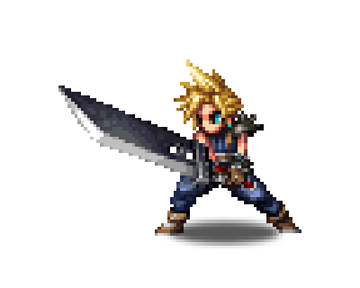
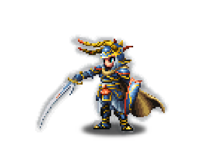
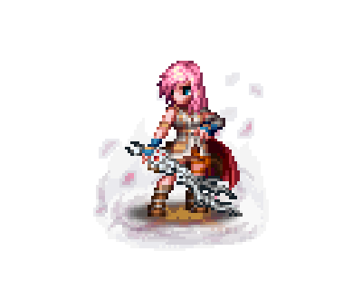
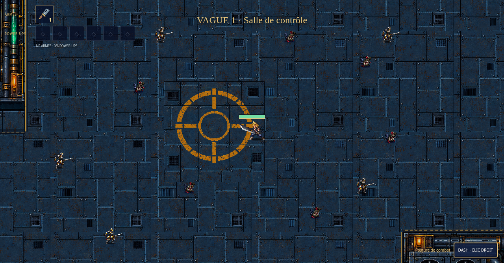
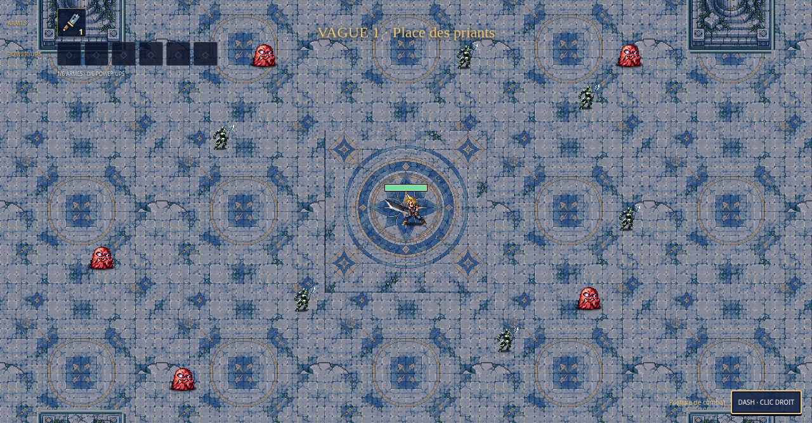
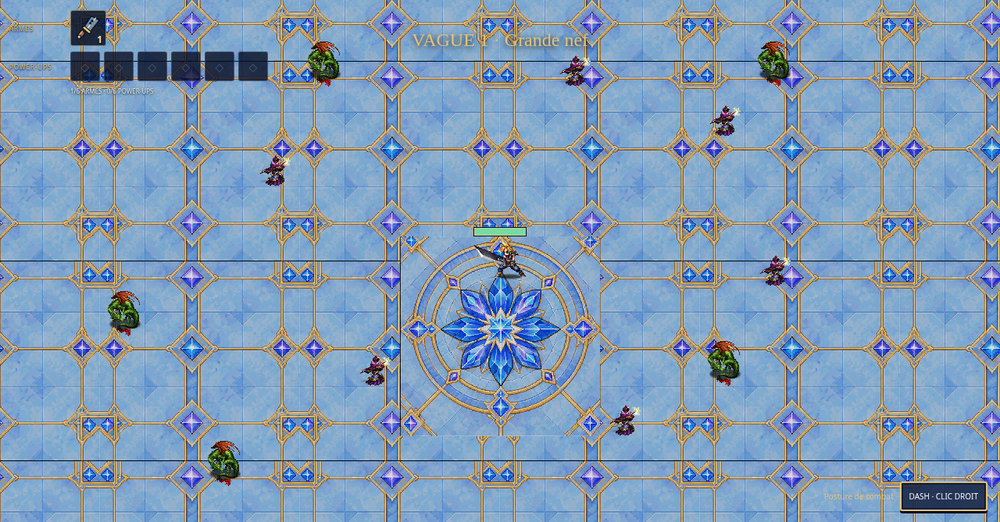
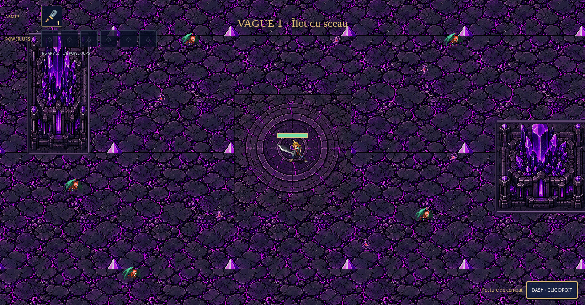

Cloud
Épée broyeuse
FAN GAME · PLAYTEST DISPONIBLE
Retrouve les héros de Final Fantasy dans un jeu de survie où chaque vague forge ton équipement. Tiens cinq minutes. Puis affronte le superboss.
Télécharger pour WindowsDéjà installé ? Télécharger le nouveau lanceur ↓01 · CHOISIS TA LÉGENDE
Cloud, Warrior of Light et Lightning sont disponibles dès le départ. Les succès ouvrent ensuite la boutique des héros.

Épée broyeuse

Lame de lumière

Blazefire Saber
02 · LÀ OÙ TOUT SE JOUE
Des arènes ouvertes, des passages étroits et des obstacles intégrés au décor. Chaque zone possède son bestiaire et son combat final.

01 · FINAL FANTASY VIILe cœur des réacteurs.
SUPERBOSS Jenova
02 · FINAL FANTASY XLes ruines des priants.
SUPERBOSS Jecht
03 · LA TOUR DE CRISTALLa lumière face à l’Empire.
SUPERBOSS L’Empereur · FF II
04 · LE MONDE DES TÉNÈBRESAu-delà des derniers cristaux.
SUPERBOSS Cloud of Darkness03 · SURVIS. ÉVOLUE. RECOMMENCE.
Dirige tes coups avec le curseur. Un clic droit te fait esquiver vers le viseur. Ajuste la caméra avec la molette.
Choisis une arme ou une amélioration à chaque niveau. Combine six armes et six power-ups aux effets complémentaires.
Chaque boss offre un niveau de personnage. À cinq minutes, le superboss apparaît : le vaincre termine l’expédition.
04 · PRÊT À PARTIR ?
Une fenêtre de jeu dédiée, un lanceur avec progression et ta sauvegarde conservée entre les versions.
Décompresse tout le fichier dans un dossier où tu peux écrire.
Double-clique sur Brave-Exvius-Survivor.exe. Les fichiers nécessaires se téléchargent en arrière-plan.
Quand l’installation est terminée, clique sur Jouer. Choisis ton héros, ta zone et ta difficulté.
Premier lancement : environ 4,7 Go de ressources à télécharger.
Une connexion Internet est nécessaire. Le lanceur reprend les fichiers partiels après une coupure ; les ressources déjà installées sont réutilisées.
Installer le lanceur de mises à jour ↓
Pour les anciens lanceurs : ferme le jeu, extrais ce petit ZIP dans ton dossier et remplace les fichiers. Cette opération est nécessaire une seule fois. Le bouton Mettre à jour installera ensuite les nouvelles versions publiées en conservant ta progression et tes ressources.
Si tu préfères une installation manuelle, ferme le jeu et le lanceur, puis extrais le ZIP complet dans ton dossier. Conserve userdata, assets/originals, assets/animation-tiles et runtime/win-x64 : ta sauvegarde et tes ressources restent disponibles.
ZQSD / WASD / flèches : déplacement. Curseur : visée, attaques automatiques. Clic droit : dash. Molette : zoom. P ou Échap : pause. C : changement de forme lorsque disponible.
TON EXPÉDITION T’ATTEND
Playtest 0.5.11 · Version en cours de développement.
Télécharger pour WindowsBuild publié le 13/10/2026. Empreinte SHA-256 :
e48bd2a46d03bb108042956cd1e3583829f47d4e08010dc20931bdb4621076dfLe lien fournit le ZIP du lanceur et de l’application. La bibliothèque FFBE est téléchargée au premier lancement.